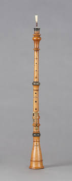
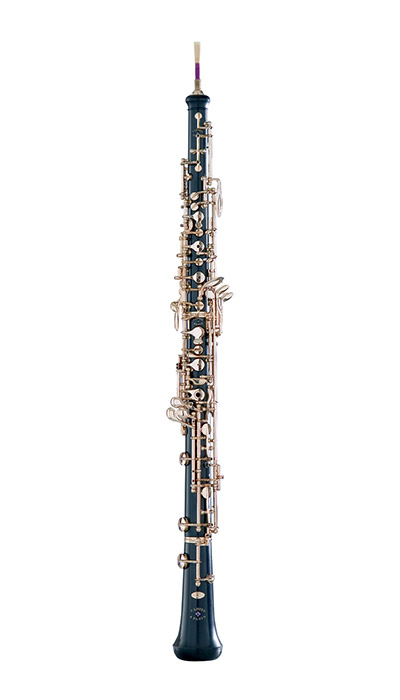

History
Baroque Oboe 1600s and Name
The Oboe was originally called the "hautbois". This came from a compound French word meaning high-woodwind. The modern English word "Oboe" was derived from the Italian translation oboè. The Oboe first appeared in the 17th century and has since evolved into the modern Oboe. The original Oboe is called a Baroque Oboe. It had only three keys and resembled a modern recorder with a flared bell and a reed. It had a range from C4 to D6.
Classical Oboe 1700s

Classical Oboe
The Classical Oboe introduced a conical, gradually narrowing bore. This bore allowed high notes on the Oboe to be more easily played. It added several more keys and added the "slur key", the equivalent to the modern octave key. The range extended from C4 to F6. Around this time, composers started writing concertos for the oboe. Some famous Oboe pieces can be found on the sounds page.
Wiener oboe 1800s
This Oboe was an Oboe that retained the conical bore and tone of the classical oboe. It is sometimes referred to as the German oboe or Viennese oboe. It featured a wider bore, a shorter and wider reed, and a different fingering system from the French Oboe (conservatoire or modern oboe). This Oboe, while still available today, fell out of use and is not very common. It is estimated only around 200 people play this variant.

Modern Conservatoire Oboe
Conservatoire Oboe (modern) 1900s
This final variant was developed in the 1900s. It is what makes up the modern Oboe. The key system was completely redesigned by Guillaume Triébert and his sons. A modern full function Oboe uses a key system called the Gillet or Full-Conservatoire system. Some student Oboes use a Conservatoire system that has been reduced. Some Oboes are made using the British thumb plate system which is a slightly modified key system adding a thumb plate. Most other members of the Oboe family use a similar key system to the conservatoire Oboe.
© Erich Ng 2020